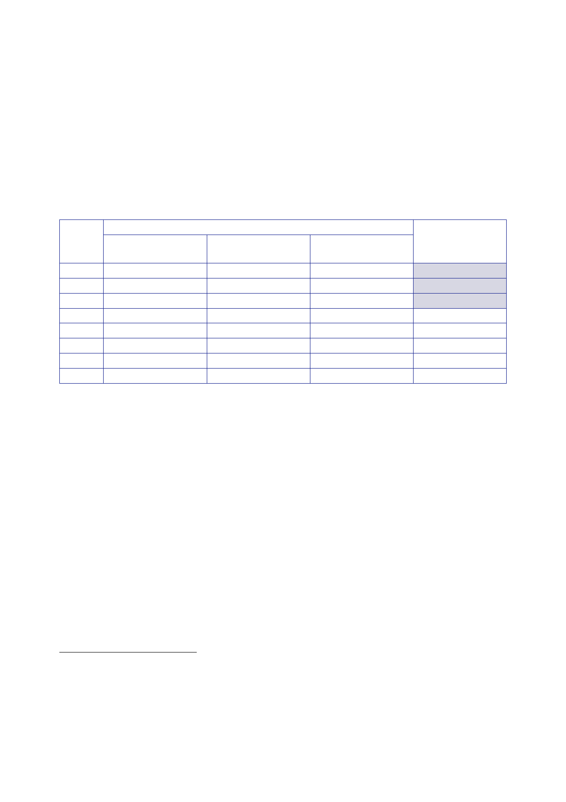

16.2 |
Support for injured Service Personnel
and veterans
59.
Lt Gen
Lillywhite told the Inquiry that he had not experienced any
problems in
securing
sufficient helicopters for those medical moves.
60.
The number of
casualties and aeromedical evacuations relating to Op TELIC are
set
out in the
table below.33
The figures
for 2003, 2004 and 2005 reflect military casualties
only; the
figures for 2006 onwards reflect military and civilian
casualties.
Year
2003
2004
2005
2006
2007
2008
2009
Total
Total
46
45
20
32
69
9
1
222
Casualties
Very
Seriously Injured
or
Wounded
14
14
5
11
24
5
0
73
Seriously
Injured or
Wounded
32
31
15
21
45
4
1
149
Aeromedical
evacuations
701
603
433
234
1,971
61.
MOD Ministers
and senior military officers made regular visits to injured
Service
Personnel,
both in the UK and Iraq.34
62.
Mr Blair made
a private visit to RCDM Selly Oak in February 2005.
63.
Mr Des Browne,
the Defence Secretary, visited RCDM Selly Oak on 15 August
2006.
64.
Lt Gen Freddie
Viggers, the Adjutant General, visited RCDM Selly Oak
on
21 August.35
He reported
on 22 August that:
•
The quality
of clinical care was excellent.
•
Morale
among military medical staff was “fragile”, due to under-manning,
the
joint
military/civilian structure, and the physical
environment.
•
Wounded
soldiers wanted to be looked after in a military environment
“within
which they
can be with their mates, be looked after by named military
nurses
33
DASA,
[undated], Op TELIC
Casualty and Fatality Tables: 1 January 2003 to 31 July
2009. The
figure
for 2009 is
to 31 July 2009. Casualty figures exclude casualties due to natural
causes.
34
Minute
Batchelor to PS/SoS [MOD], 13 August 2006, ‘Preparatory Brief for
Visit to RCDM HQ on
Tuesday 15
Aug 06 of the Rt Hon Des Browne MP Secretary of State for
Defence’.
35
Minute AG
to DCDS (Health), 22 August 2006, ‘Visit to Royal Centre for
Defence Medicine (RCDM) –
21 August
2006’.
49